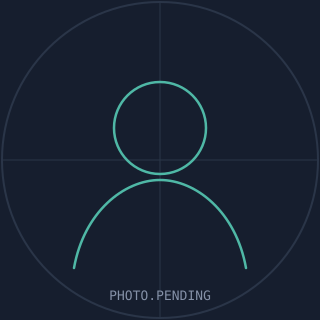

보안 정책 자동화 엔지니어
이인직
방화벽 정책을 손으로 만들던 일을, 자동화된 도구로 바꿉니다.
정책 생성, 보안 점검, 변경 이력 관리를 AI와 자동화로 다시 설계합니다.
About
Changelog
회사에서 맡아온 프로젝트를 변경 이력처럼 기록합니다.
AI Skill
직접 만들어 쓰고 있는 AI 활용 도구들입니다.

보안 정책 자동화 엔지니어
방화벽 정책을 손으로 만들던 일을, 자동화된 도구로 바꿉니다.
정책 생성, 보안 점검, 변경 이력 관리를 AI와 자동화로 다시 설계합니다.
회사에서 맡아온 프로젝트를 변경 이력처럼 기록합니다.
직접 만들어 쓰고 있는 AI 활용 도구들입니다.